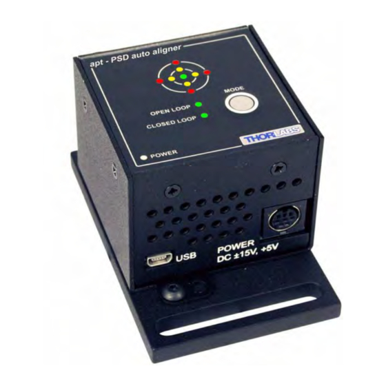
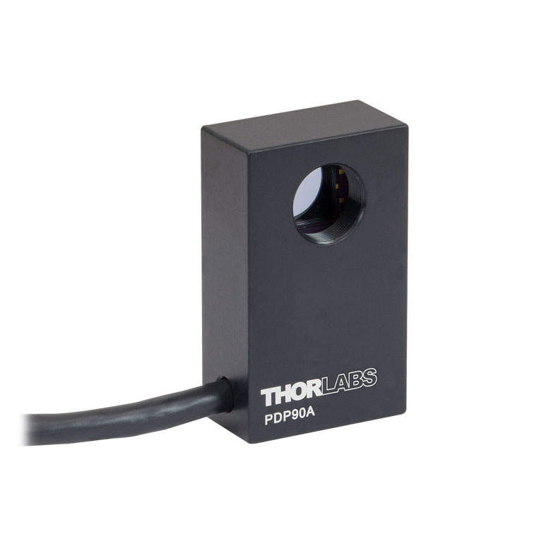
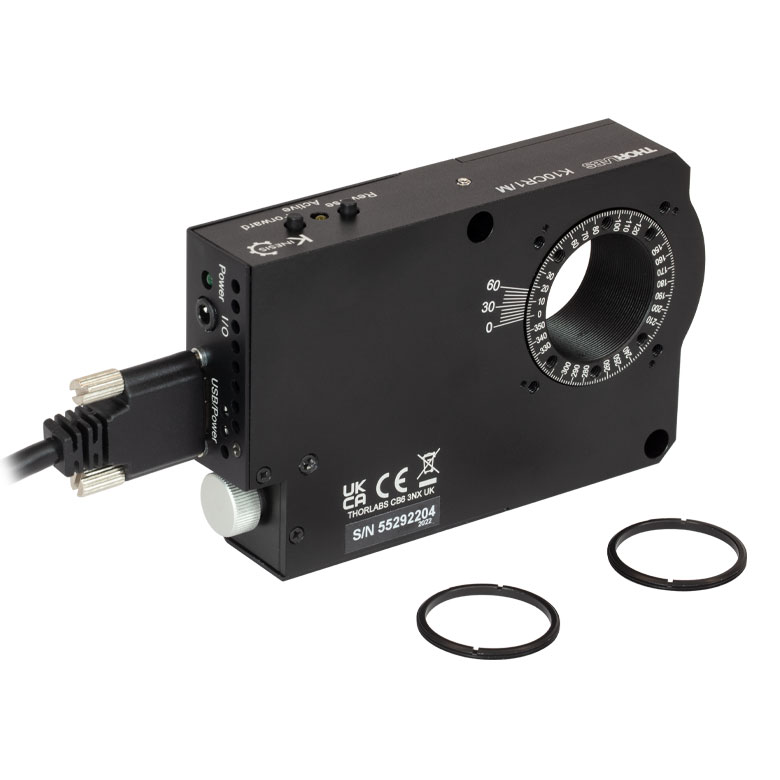

TPA101

Controller Description
The TPA101 is a compact single-channel T-Cube controller from Thorlabs designed for precise automatic alignment of optical components using Position-Sensitive Detectors (PSDs). It is typically used in optical systems requiring high-speed, real-time feedback-based alignment. The TPA101 is compatible with Thorlabs’ auto-alignment peripherals and features USB connectivity for computer control via Thorlabs’ Kinesis Software or QuantumION's Thorlabs Cube Repository.
Controller Use-Cases
- TPA101 is used in applications where precise optical alignment is essential, such as:
- Beam Stabilization: Maintaining optical beam position stability over time.
- Optical Alignment Automation: Real-time alignment of lenses, mirrors, and other optical elements.
- Laser Systems: Dynamic alignment of laser beams for maximum throughput and precision.
Peripherals Examples
- Position-Sensitive Detectors 
- Motorized Mirror Mounts 
- Auto-Aligning Modules

API Reference
Bases: _Cube
TPA101 Position Sensing Detector driver implementation.
Source code in venv/lib/python3.9/site-packages/thorlabs_cube/driver/tcube/tpa.py
7 8 9 10 11 12 13 14 15 16 17 18 19 20 21 22 23 24 25 26 27 28 29 30 31 32 33 34 35 36 37 38 39 40 41 42 43 44 45 46 47 48 49 50 51 52 53 54 55 56 57 58 59 60 61 62 63 64 65 66 67 68 69 70 71 72 73 74 75 76 77 78 79 80 81 82 83 84 85 86 87 88 89 90 91 92 93 94 95 96 97 98 99 100 101 102 103 104 105 106 107 108 109 110 111 112 113 114 115 116 117 118 119 120 121 122 123 124 125 126 127 128 129 130 131 132 133 134 135 136 137 138 139 140 141 142 143 144 145 146 147 148 149 150 151 152 153 154 155 156 157 158 159 160 161 162 163 164 165 166 167 168 169 170 171 172 173 174 175 176 177 178 179 180 181 182 183 184 185 186 187 188 189 190 191 192 193 194 195 196 197 198 199 200 201 202 203 204 205 206 207 208 209 210 211 212 213 214 215 216 217 218 219 220 221 222 223 224 225 226 227 228 229 230 231 232 233 234 235 236 237 238 239 240 241 242 243 244 245 246 247 248 249 250 251 252 253 254 255 256 257 258 259 260 261 262 263 264 265 266 267 268 269 270 271 272 273 274 275 276 277 278 279 280 281 | |
__init__(serial_dev)
Initialize the TPA101 driver.
:param serial_dev: Serial device identifier.
Source code in venv/lib/python3.9/site-packages/thorlabs_cube/driver/tcube/tpa.py
10 11 12 13 14 15 16 17 | |
get_loop_params()
async
Get proportional, integral, and differential feedback loop constants.
:return: A tuple containing p_gain, i_gain, and d_gain values.
Source code in venv/lib/python3.9/site-packages/thorlabs_cube/driver/tcube/tpa.py
64 65 66 67 68 69 70 71 72 73 74 75 | |
get_quad_display_settings()
async
Get the display settings for the quad system.
:return: A tuple containing disp_intensity, disp_mode, and disp_dim_timeout.
Source code in venv/lib/python3.9/site-packages/thorlabs_cube/driver/tcube/tpa.py
189 190 191 192 193 194 195 196 197 198 199 | |
get_quad_loop_params_two()
async
Get the extended loop parameters for the quad system.
:return: A tuple containing p_gain, i_gain, d_gain, d_cutoff_freq, notch_freq, filter_q, notch_on, deriv_filter_on.
Source code in venv/lib/python3.9/site-packages/thorlabs_cube/driver/tcube/tpa.py
260 261 262 263 264 265 266 267 268 269 270 271 272 273 | |
get_quad_oper_mode()
async
Get the operating mode of the unit.
:return: The current operating mode of the unit.
Source code in venv/lib/python3.9/site-packages/thorlabs_cube/driver/tcube/tpa.py
86 87 88 89 90 91 92 93 94 95 96 97 | |
get_quad_position_demand_params()
async
Get position demand parameters for the quad system.
:return: A tuple containing x_pos_min, x_pos_max, y_pos_min, and y_pos_max.
Source code in venv/lib/python3.9/site-packages/thorlabs_cube/driver/tcube/tpa.py
135 136 137 138 139 140 141 142 143 144 145 | |
get_quad_position_outputs()
async
Get the X and Y position outputs.
:return: A tuple containing x_pos and y_pos.
Source code in venv/lib/python3.9/site-packages/thorlabs_cube/driver/tcube/tpa.py
212 213 214 215 216 217 218 219 220 221 222 | |
get_quad_readings()
async
Get the status bits of the quad readings.
:return: Status bits of the quad reading.
Source code in venv/lib/python3.9/site-packages/thorlabs_cube/driver/tcube/tpa.py
159 160 161 162 163 164 165 166 167 168 169 | |
get_quad_status_bits()
async
Get the status bits of the control unit.
:return: Status bits of the control unit.
Source code in venv/lib/python3.9/site-packages/thorlabs_cube/driver/tcube/tpa.py
147 148 149 150 151 152 153 154 155 156 157 | |
handle_message(msg)
async
Handle incoming messages from the TPA101 device.
:param msg: Message object received from the device.
Source code in venv/lib/python3.9/site-packages/thorlabs_cube/driver/tcube/tpa.py
19 20 21 22 23 24 25 26 27 28 29 30 31 32 33 34 35 36 37 38 39 40 41 42 43 44 45 46 47 48 49 50 | |
set_eeprom_params(msg_id)
async
Save the parameter settings for the specified message.
:param msg_id: The message ID of the message containing the parameters to be saved.
Source code in venv/lib/python3.9/site-packages/thorlabs_cube/driver/tcube/tpa.py
275 276 277 278 279 280 281 | |
set_loop_params(p_gain, i_gain, d_gain)
async
Set proportional, integral, and differential feedback loop constants.
:param p_gain: Proportional gain value. :param i_gain: Integral gain value. :param d_gain: Differential gain value.
Source code in venv/lib/python3.9/site-packages/thorlabs_cube/driver/tcube/tpa.py
52 53 54 55 56 57 58 59 60 61 62 | |
set_quad_display_settings(disp_intensity, disp_mode, disp_dim_timeout)
async
Set the display settings for the quad system.
:param disp_intensity: Display intensity (0-255). :param disp_mode: Display mode (1 for Difference, 2 for Position). :param disp_dim_timeout: Dim timeout value as per documentation.
Source code in venv/lib/python3.9/site-packages/thorlabs_cube/driver/tcube/tpa.py
171 172 173 174 175 176 177 178 179 180 181 182 183 184 185 186 187 | |
set_quad_loop_params_two(p_gain, i_gain, d_gain, d_cutoff_freq, notch_freq, filter_q, notch_on, deriv_filter_on)
async
Set the extended loop parameters for the quad system.
:param p_gain: Proportional gain value. :param i_gain: Integral gain value. :param d_gain: Differential gain value. :param d_cutoff_freq: Differential cutoff frequency. :param notch_freq: Notch filter frequency. :param filter_q: Filter quality factor. :param notch_on: Notch filter on/off flag. :param deriv_filter_on: Derivative filter on/off flag.
Source code in venv/lib/python3.9/site-packages/thorlabs_cube/driver/tcube/tpa.py
224 225 226 227 228 229 230 231 232 233 234 235 236 237 238 239 240 241 242 243 244 245 246 247 248 249 250 251 252 253 254 255 256 257 258 | |
set_quad_oper_mode(mode)
async
Set the operating mode of the unit.
:param mode: 1 for Monitor Mode, 2 for Open Loop, 3 for Closed Loop.
Source code in venv/lib/python3.9/site-packages/thorlabs_cube/driver/tcube/tpa.py
77 78 79 80 81 82 83 84 | |
set_quad_position_demand_params(x_pos_min, x_pos_max, y_pos_min, y_pos_max, low_volt_output_route, open_loop_pos_demands, x_pos_demand_feedback_sense, y_pos_demand_feedback_sense)
async
Set position demand parameters for the quad system.
:param x_pos_min: Minimum X-axis position demand. :param x_pos_max: Maximum X-axis position demand. :param y_pos_min: Minimum Y-axis position demand. :param y_pos_max: Maximum Y-axis position demand. :param low_volt_output_route: LV output signal routing :param open_loop_pos_demands: Open loop position demands configuration :param x_pos_demand_feedback_sense: Signal sense and gain for X-axis output :param y_pos_demand_feedback_sense: Signal sense and gain for Y-axis output
Source code in venv/lib/python3.9/site-packages/thorlabs_cube/driver/tcube/tpa.py
99 100 101 102 103 104 105 106 107 108 109 110 111 112 113 114 115 116 117 118 119 120 121 122 123 124 125 126 127 128 129 130 131 132 133 | |
set_quad_position_outputs(x_pos, y_pos)
async
Set the X and Y position outputs.
:param x_pos: X-axis position output value (-32768 to 32767). :param y_pos: Y-axis position output value (-32768 to 32767).
Source code in venv/lib/python3.9/site-packages/thorlabs_cube/driver/tcube/tpa.py
201 202 203 204 205 206 207 208 209 210 | |